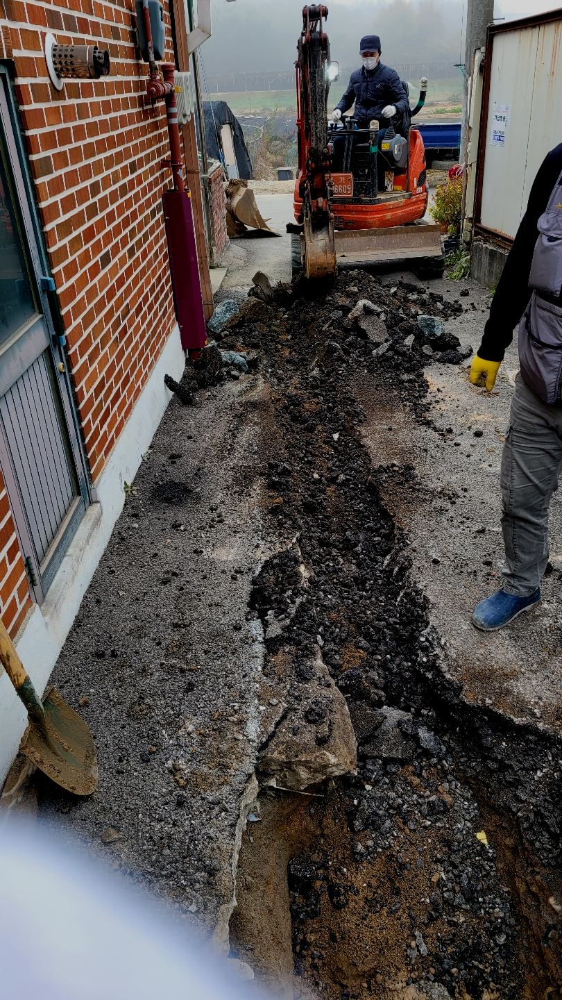
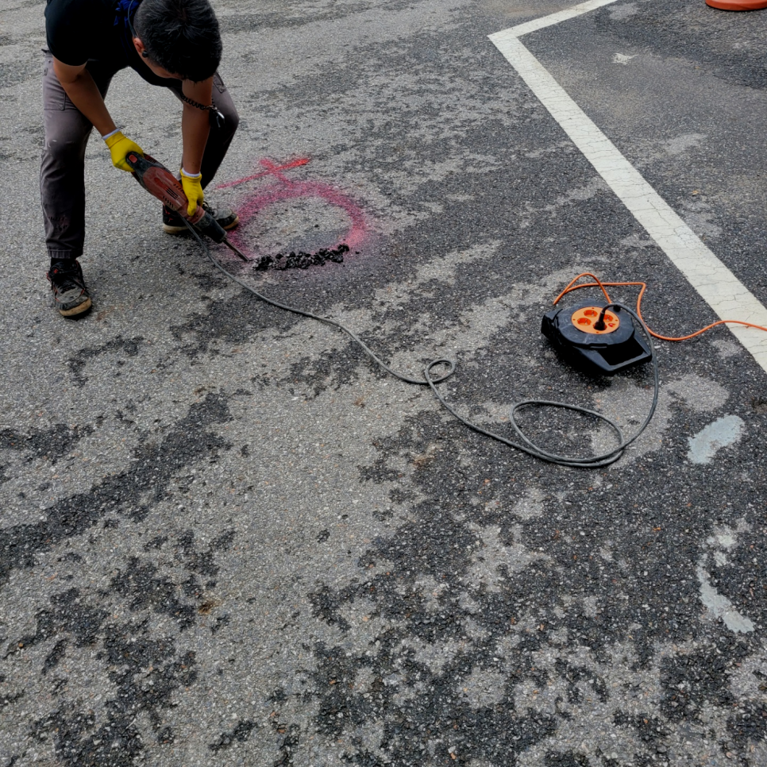
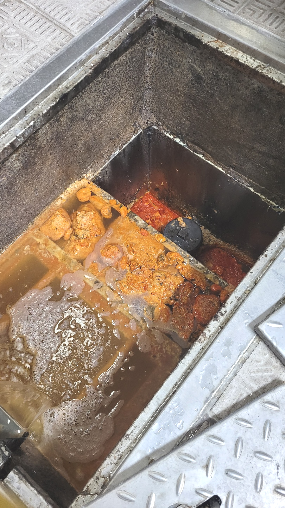
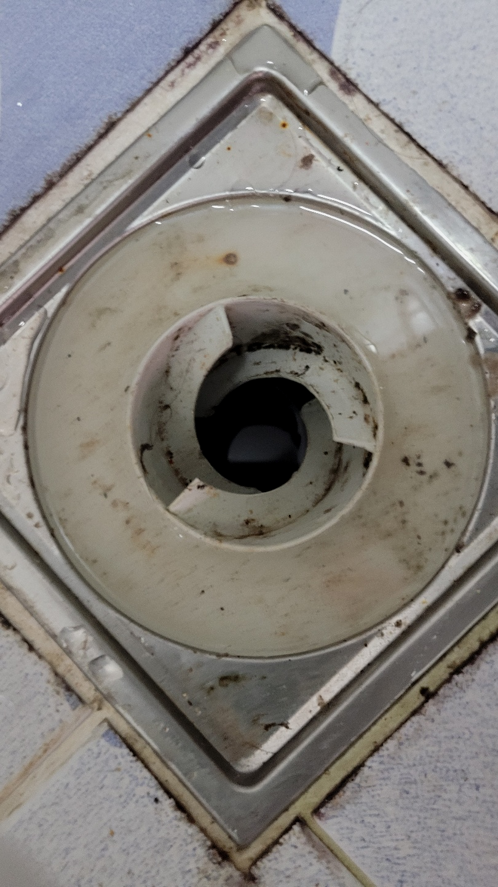
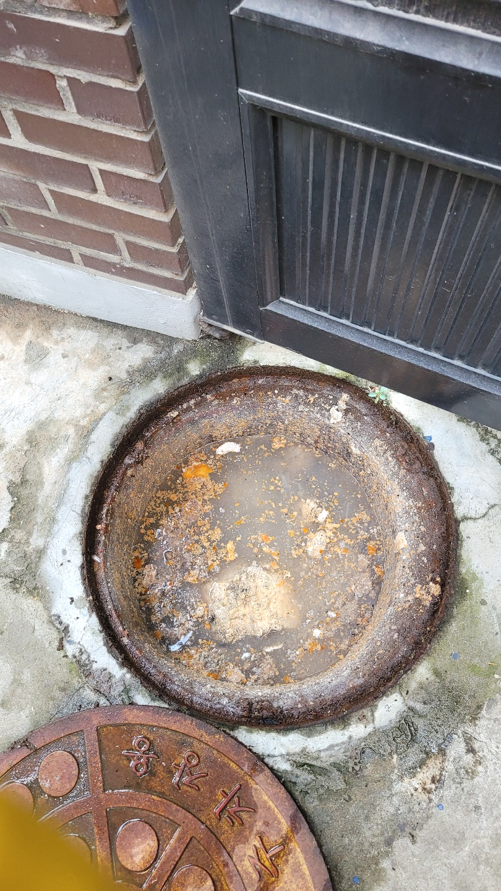
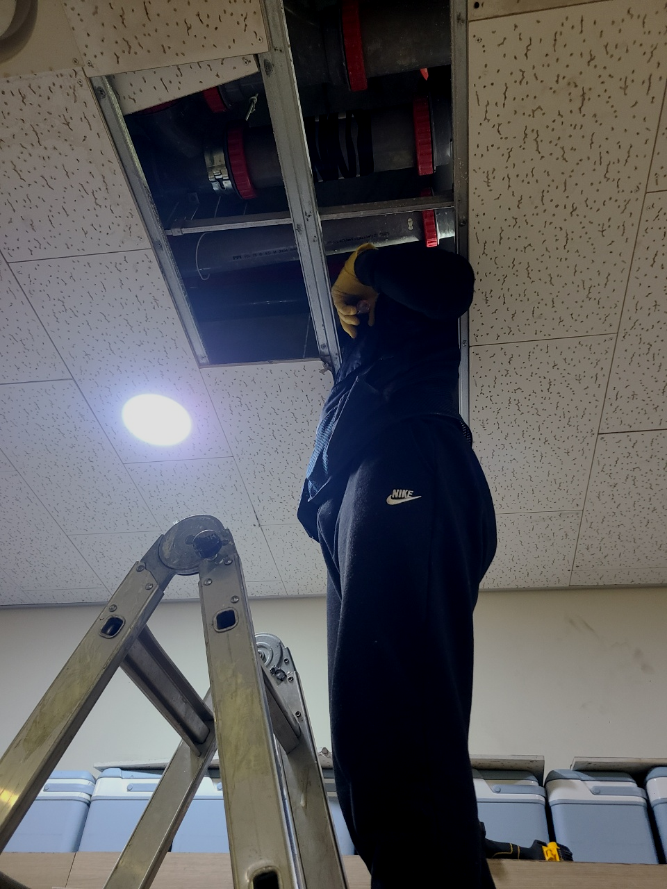

🏠 평택 팽성 하수구막힘 뚫음 안정리 송화리 추팔리 하수구뚫는 설비업체
평택 싱크대막힘 전문 시공 후기

📋 작업 개요
- 위치: 평택
- 서비스 유형: 싱크대막힘, 변기막힘, 하수구막힘, 배관막힘, 역류해결, 뚫는업체, 배관청소, 고압세척
- 작업 일시: 2023. 10. 27. 0:41
- 업체명: 하수구수사대 (010-5615-2118)
🔍 문제 상황
안녕하십니까^^
설비전문업체 "하수구수사대"를 찾아주셔서 감사드려요^^
하수가 막히면 옷걸이나 약품 또는 철물점에서 판매하는 돌돌이 스프링을 구입하셔서 해결하려고 많은분들이 노력하고 있습니다.
저희 업체는 수많은 장비로 해결 방법을 통해 수많은 분들의 걱정을 해결해드리기 위해 노력하고 있습니다. 저희 쪽에서 구비하고 다니는 전문장비는 막힌 하수구를 완벽하게 뚫는데 최적화 되어있습니다.
평택 팽성 하수구막힘 뚫음 안정리 송화리 추팔리 하수구뚫는 설비업체

🔎 원인 분석
💡 전문가 진단: 평택 팽성 하수구막힘 뚫음 안정리 송화리 추팔리 하수구뚫는 설비업체
문제가 발생하면 빠른시간에 출장 작업이 가능한 퇴수구업체와 최신장비를 갖춘 업체를 똑똑하게 선정하셔야합니다. 배관 초입을 비롯하여 배관 내부에 이르기까지 세세하게 보는게 가능한 배관내시경이 기본장비인데 이 장비조차 없는 업체들이 있으지 조심하세요.
배수구전문가에게 도움을 받으려 해도 얼마가 들지 모르기 때문에 고민이 되는 게 당연하시겠지만 시간이 흘러갈수록 비용도 늘어나기 때문에 증상이 발견되었을 때 당장 고칠 생각이 없더라도 얼마나 심각한 것인지 견적 정도는 받아보시는 것을 추천드립니다.
또 약품을 잘못사용하면 막힌 하수도 상황을 더 악화시키고 많이 쓰게되면 배관이 더 안좋아서 배관교체를 해야할수도 있으니 쓰시려 할때는주의해야 합니다.
배출관막힘에 따라 통수방식이 다르기에 최신장비를 갖고서 확실한 검수,진단에 맞춰 적합한 장비를 골라 작업을 진행해야합니다. 저희는 최신장비를 비롯해서 고압세척,정밀관찰,내시경 여러종에 장비를 싣고 현장을 다니기 때문에 즉시 해결이 가능합니다.
전문 장비나 기술력이 부족한 업체라면 배출관막힘 어려운 현장에서 작업을 하다가 손을 놔 버리고 가버리는 경우도 있기 때문에 고객님 입장에서는 맡긴 것도 후회될 테고 하수설비를 사용하지 못해 불편함도 커지니 마음이 초조하고 급해질 수밖에 없게 됩니다.

🔧 작업 과정
일단 고여있는 물들을 약간 퍼내고 난 뒤, 바로 하수로 내시경 카메라를 삽입하였습니다. 내시경 카메라는 하수는 물론이고 세면대 배관, 변기 배관, 싱크대 배관 등의 하수막힘으로 불러주시는 고객님들의 현장에서 늘 사용되는 작업 장비 중 하나입니다.
처음에는 급한 마음에 혼자서 셀프 요법으로 해결을 하려고 했지만 얼마 지나지 않아서 아예 퇴수가 막혀버리다 보니 아무런 소용이 없었다고 하셨습니다.
그런데도불구 이런것들은 많이들 지켜오고있으며 철저히 하수도 관리하는분들은 손이닿는곳까지 배관청소를해주거나 교체작업도 하시곤합니다.이렇게해주어도 막혀버리기때문에 경력자를 찾아나서게되죠
배관뚫기위해 주변을보면 구입가능한 분말형태의 클리너제품을 이용하거나 뚫어뻥같은 도구를이용해 해결을하려고도하십니다.다른예로 배관배관 내부로 뾰족한물건을 밀어넣은후 돌발상황을 야기할수있는 대처를 시도하시는분들도계십니다
경험이많은전문업체를 선택하시기위해서는 위의글에서 얘기해드린 최첨단기계들중에서 배수배관카메라를 갖춰져있는하수구회사를 앞서서 알아보는게좋은방법입니다
서둘러서 아무거나부으시거나 장비를무작정넣는다면 하수도모양에따라서 크랙이생겨날수있어서 손쓸방법이 없을수도있습니다.
이해가능한 견적비용으로 꼼꼼하게 본다음에 수긍가능한 견적가를내고있어서 고민을크게 하지않아도돼요.가령 생각해보고싶으시다면 나중에문의 하셔도됩니다 매번얘기해드리고 배수 뚫고있어서 돈에관한부분은 안심하셔도괜찮아요.
아주 작은 기름과 이물질들이 서서히 쌓여서 이런 돌이 되었다니 믿기지 않는다던 고객님께 충분히 해결 방법을 설명해 드리고 바로 배관뚫는 작업에 들어갔습니다.


✅ 작업 완료
고객님은 상황의 심각성을 인지하지 못하고 급한 데로 옷걸이를 찾아서 하수구로 마구 찔러보셨다고 하는데요, 뚫릴 기미가 보이지 않았고, 겨우겨우 먼지 같은 이물질만 빼낼 수 있었다고 합니다. 그래서 안되겠다 싶어 전문설비업체를 검색하였고 저희에게 문의를 해주신 거였지요.
제아무리 좋은 장비를 갖췄더라도 노하우 없이는 말짱 도루묵입니다. 퇴수 일을하는 초심자는 심도 있는 일을 할 때 분명 한계점에 도달하여 이따금씩 포기하기도 합니다.
#하수구막힘 #하수구뚫음 #하수구역류 #씽크대막힘 #싱크대역류 #오수관막힘 #하수구청소 #욕실하수구막힘 #변기막힘 #하수구뚫는비용 #싱크대수리 #화장실막힘




⚠️ 주방 싱크대 배관 막힘 예방 수칙
- ✅ 기름기가 묻은 식기나 프라이팬은 설거지 전 키친타올로 반드시 기름때를 닦아내세요.
- ✅ 주기적으로 싱크대 개수대에 뜨거운 물을 가득 받아 한 번에 내려 배관 내부 기름을 씻어내세요.
- ✅ 배수구 거름망을 미세한 필터로 사용하시고 음식물 찌꺼기가 틈으로 새어 들지 않게 관리하세요.
- ✅ 베이킹소다와 식초를 뜨거운 물과 함께 일주일에 한 번씩 부어주면 배관 살균과 막힘 예방에 좋습니다.
💡 핵심 정리
- 확실한 장비 작업(내시경 점검 및 샤프트 스케일링)으로 원인을 뿌리 뽑습니다.
- 작업 후 1년 이내에 동일한 부위 재발 시 100% 무상 A/S 서비스를 보장합니다.
- 서울 · 경기 · 인천 전 지역에 24시간 언제든 긴급 출동할 수 있도록 항시 대기 중입니다.
❓ 자주 묻는 질문 (FAQ)
🚨 평택 싱크대막힘 문제로 고민이신가요?
정확한 원인 진단과 확실한 시공으로 재발 없는 해결을 약속드립니다.
24시간 긴급 출동 | 서울 · 경기 · 인천 전지역 | 1년 내 재발 시 무상 A/S